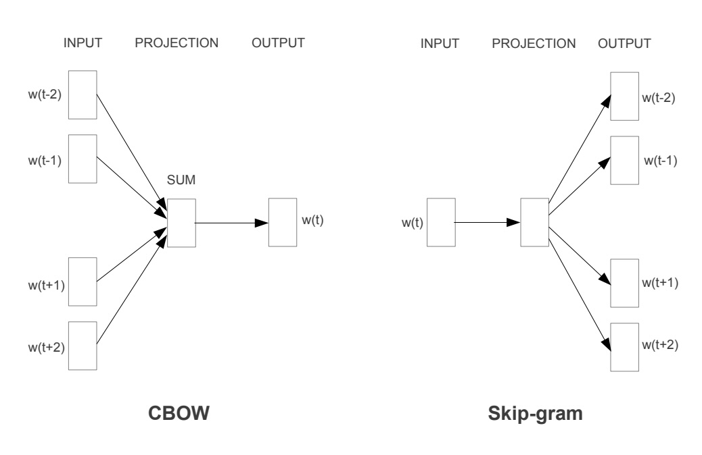

Assignment 11: Bag of Words, Text Classification, and Word Embeddings
Learning Objectives
- Learn about bag of words methods for representing text as data
- Use a bag of words methods for text classification
- Learn about the concept of word embeddings and understand them as a form of unsupervised learning
- Understand the pros and cons of word embeddings versus the bag of words approach
- Examine word2vec encodings
Text Classification with Bag of Words
In the video from IBM, there were several examples used to motivate the notion of bag of words for text classification. Let’s use one of the problems mentioned, sentiment analysis, and apply it to analyzing movie reviews. We’ll be using a fairly old dataset for our analysis, but it is one that is easy to work with and big enough for us to learn some important skills about working with text. The dataset is Stanford’s Large Movie Review Dataset. Here is a snippet from the README.md file that is included with the dataset.
Large Movie Review Dataset v1.0
Overview
This dataset contains movie reviews along with their associated binary sentiment polarity labels. It is intended to serve as a benchmark for sentiment classification. This document outlines how the dataset was gathered, and how to use the files provided.
Dataset
The core dataset contains 50,000 reviews split evenly into 25k train and 25k test sets. The overall distribution of labels is balanced (25k pos and 25k neg). We also include an additional 50,000 unlabeled documents for unsupervised learning.
In the entire collection, no more than 30 reviews are allowed for any given movie because reviews for the same movie tend to have correlated ratings. Further, the train and test sets contain a disjoint set of movies, so no significant performance is obtained by memorizing movie-unique terms and their associated with observed labels. In the labeled train/test sets, a negative review has a score <= 4 out of 10, and a positive review has a score >= 7 out of 10. Thus reviews with more neutral ratings are not included in the train/test sets. In the unsupervised set, reviews of any rating are included and there are an even number of reviews > 5 and <= 5.
In the assignment 11 notebook, you’ll be working with this dataset and implementing your own machine learning system for predicting the sentiment of a movie review using a bag of words representation.
Bag of Words and Machine Learning Bias
Let’s do a little spiraling back to one of the big ideas in machine learning we started the semester with. We want to draw your attention to this specific example.
You may have heard that Amazon scrapped a secret AI recruiting tool that showed bias against women. More specifically, the tool performed automatic keyword analysis of job applications to predict whether or not the applicant was worth forwarding on to a human for further evaluation. Early in the development of this system researchers discovered that the model the system had learned placed a negative weight on words such as “women’s” as well as the names of some women’s colleges.
Given what you just learned about the bag of words approach and what we learned about confounding variables in assignment 5, how might Amazon’s system have learned to associate negative feature weights with the gendered words or words associated with women’s colleges?
Word Embeddings
The concept of a word embedding was introduced in the day 12 materials. Word embeddings overcome a key limitation with bag of words approaches. Specifically, in the bag of words approach, each word is represented as an independent dimension in the vector that represents a particular piece of text. This means that any machine learning task you solve using these vectors needs to learn how the presence or absence of each word in the text correlates with the task at hand (no information sharing between words is leveraged).
Before getting into word embeddings in more detail, want to make sure you have a good handle on an important drawback of bag of words approaches.
Suppose, we had a training set consisting of the following movie reviews (you can assume that these are the only reviews in the training set and that we trained the model using a similar technique to what we used in assignment 10).
| Review | Label |
|---|---|
| The casting of the movie was impeccable | + |
| The movie was great | + |
| The movie was awful | - |
| The movie was the worst I’ve ever seen | - |
| The movie was an affront to the art of film-making | - |
Explain why a bag of words model trained on this data would have a difficult time evaluating the following movie reviews from a test set.
- “The movie was fantastic”
- “The cast of the movie did a superb job”
Word embeddings were introduced as a way to overcome the issues highlighted by the previous problem. Instead of treating each word as an independent entity, we can learn to represent (embed) each word in a vector space that preserves key properties of the words themselves. Let’s use the symbol $r$ to represent our embedding (we’ll use $r$ since it is a representation of the word). We can think of $r$ as a function from words to the vector space $\mathbb{R}^d$ (don’t get confused by this notation, $\mathbb{R}^d$ just means a d-dimensional vector of real numbers).
In order to learn our word embedding function $r$, we can use a form of machine learning called unsupervised learning. As we discussed in the previous module, unsupervised learning involves learning from unlabeled data (in contrast to the supervised learning setting we’ve been studying for most of the term where we assume we have access to a training set consisting of input / output pairs). We can use the concept of unsupervised learning as a way to create word embeddings. There are quite a few ways to accomplish this goal, but two foundational approaches were proposed in the paper Efficient Estimation of Word Representations in Vector Space . Here is the key figure from the paper.

Given a sequence of words, we can pose a prediction task where we try to either predict the center word based on the embeddings of the surrounding words (CBOW) or the predict the surrounding words based on the center word (skip-gram).
As mentioned in the caption for Figure 1, we can use the data itself to pose a prediction task. You might be wondering how we can call this unsupervised learning given that we are trying to predict something (either the surrounding words or the center word). Well, the key is that the thing we are trying to predict is derived directly from the data itself (there is no need for any additional information, or label, to be added that is not in the data already). As such, we can use this approach to learn a word embedding from a database of text (without the need for any additional labeling).
Word2vec
As mentioned before, word2vec was introduced in the paper Efficient Estimation of Word Representations in Vector Space . We don’t think you need to read the paper (but you are certainly welcome to!), but we do want you to get a feel the word embeddings created by word2vec. We have put together a notebook that downloads the word embeddings and allows you to explore them a bit.
Bias in Word Embeddings
Depending on what experiments you tried with word2vec, you may have already seen some examples of bias. We would like you to read the paper Man is to Computer Programmer as Woman is to Homemaker? Debiasing Word Embeddings. The paper gets quite technical in places, although many of the ideas you have seen before (PCA??!?). We would like you to read sections 1-4 of the paper (sadly PCA only shows up in the later sections of the paper). Please take notes on key takeaways and unanswered questions. If you’d like to go into the latter sections of the paper (section 5 and beyond), please feel free to do so (this is not required, at all).
It’s also probably worth mentioning that the literature on bias in word embeddings is quite extensive with a lot of fascinating things to explore (and we’d love to learn from you if you if you do more explorations!).